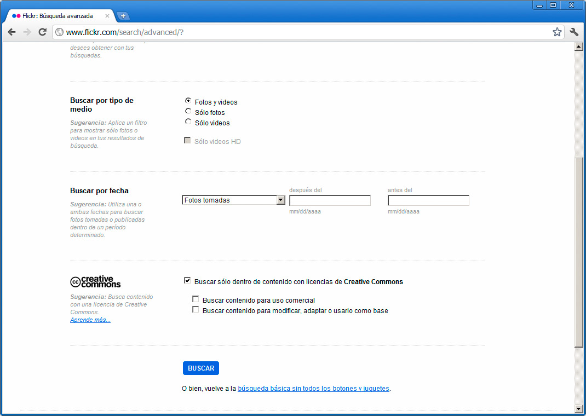
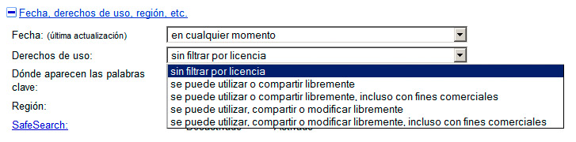
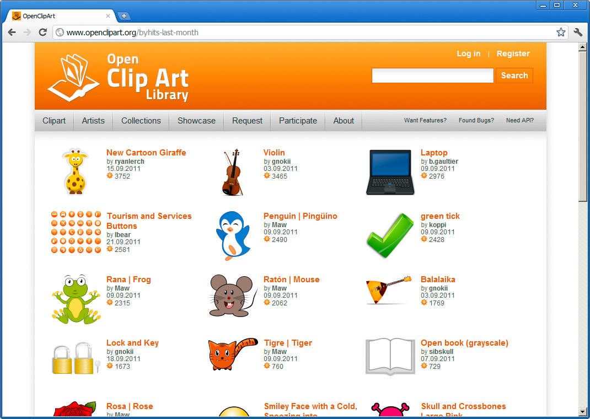
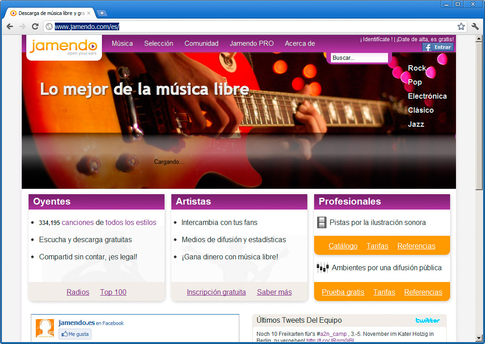
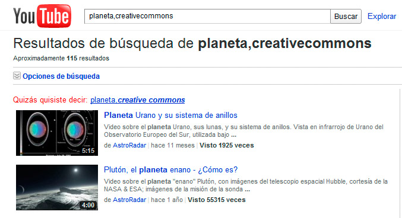

Las listas de sitios donde encontrar recursos gratuitos o libres en Internet son muy grandes. Intentaremos recoger aquí algunos de esos sitios.
Imágenes
Estos sitios web contienen imágenes con licencias que permiten su uso.
- Flickr (http://www.flickr.com): probablemente el mayor archivo fotográfico del planeta. Desde su buscador, en el apartado de búsqueda avanzada, podemos indicar que se busquen sólo recursos con licencias Creative Commons.

- Banco de imágenes y sonidos del ITE (http://recursostic.educacion.es/bancoimagenes): Un excelente lugar para encontrar contenidos, especialmente en el ámbito educativo.
- Google (http://www.google.es) Google cuenta con una opción avanzada, indicada para acotar las búsquedas que realizamos sólo a imágenes con licencias abiertas. La figura incluye esta opción:

- Open Clip Art Library (http://openclipart.org ) es un recurso a tener muy en cuenta para localizar gráficos, dibujos, iconos, etc.

- Wikimedia commons (http://commons.wikimedia.org ) completa esta lista de sitios web, imprescindibles para encontrar material libre de derechos de autor excesivamente privativos.
Audio
La lista de sitios nuevamente es muy amplia. Aquí se recoge una serie de sitios, entre los que brilla con luz propia el primero de ellos:
-
Jamendo (http://www.jamendo.com/es/)

- Magnatune (http://magnatune.com/)
- Beatpick (http://www.beatpick.com/)
- Podcastfaq (http://www.podcastfaq.com/resources/podsafe-audio)
- Audiofarm (http://www.audiofarm.org/)
- Netlabels (http://www.archive.org/details/netlabels)
- SoundClick (http://www.soundclick.com/)
Vídeo
En YouTube también es posible encontrar vídeos licenciados como Creative Commons, realizando una búsqueda de un término seguido de una coma y la palabra creativecommons, como se muestra en la figura:

En general, con los vídeos la situación es diferente, ya que tenderemos más a enlazar a sus sitios originales, antes que descargarlos en nuestros equipos.
Otras consideraciones
Además de las opciones indicadas, hay otros muchos sitios web que distribuyen sus recursos para que puedan ser empleados en la creación de nuevas obras. Google será nuestro amigo y nos ayudará a localizar lo que necesitemos.
También deberíamos considerar la posibilidad de publicar nuestro propio trabajo bajo una licencia abierta, permitiendo así su mejor difusión y que otras personas puedan beneficiarse también de ello, como nosotros nos habremos beneficiado alguna vez del trabajo de los demás.
Pregunta Verdadero-Falso
Todos los enumerados a continuación son sitios donde encontrar recursos gratuitos o libres en Internet:
Magnatune (http://magnatune.com/)
Beatpick (http://www.beatpick.com/)
Podsafe Media (http://www.podsafemedia.com/)
Audiofarm (http://www.audiofarm.org/)
Network (http://www.archive.com/details/netlabels)
SoundClick (http://www.soundclick.com/)
Flickr (http://www.flickr.com)
Verdadero Falso